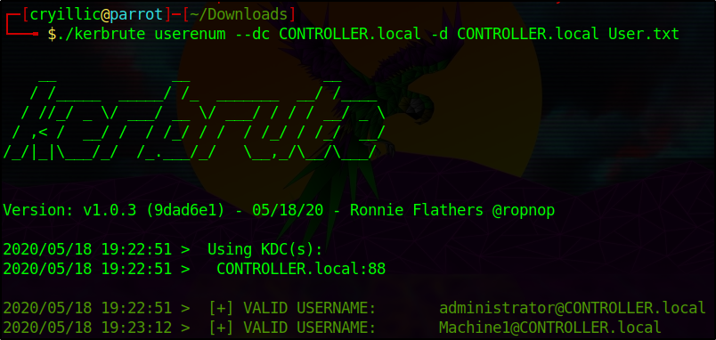

Kerbrute
Kerbrute is a popular enumeration tool used to brute-force and enumerate valid active-directory users by abusing the Kerberos pre-authentication.
For more information on enumeration using Kerbrute check out the Attacktive Directory room by Sq00ky -
https://tryhackme.com/room/attacktivedirectoryYou need to add the DNS domain name along with the machine IP to /etc/hosts inside of your attacker machine or these attacks will not work for you -
10.10.215.150 CONTROLLER.local
Abusing Pre-Authentication Overview -
By brute-forcing Kerberos pre-authentication, you do not trigger the account failed to log on event which can throw up red flags to blue teams. When brute-forcing through Kerberos you can brute-force by only sending a single UDP frame to the KDC allowing you to enumerate the users on the domain from a wordlist.
Kerbrute Installation -
1.) Download a precompiled binary for your OS -
https://github.com/ropnop/kerbrute/releases2.) Rename kerbrute_linux_amd64
to kerbrute3.) chmod +x kerbrute - make kerbrute executable
Enumerating Users w/ Kerbrute -
Enumerating users allows you to know which user accounts are on the target domain and which accounts could potentially be used to access the network.
1.) cd into the directory that you put Kerbrute2.) Download the wordlist to enumerate with
here3.)
./kerbrute userenum --dc CONTROLLER.local -d CONTROLLER.local User.txt - This will brute force user accounts from a domain controller using a supplied wordlist
Now enumerate on your own and find the rest of the users and more importantly service accounts.
{kind=link}
{kind=link}